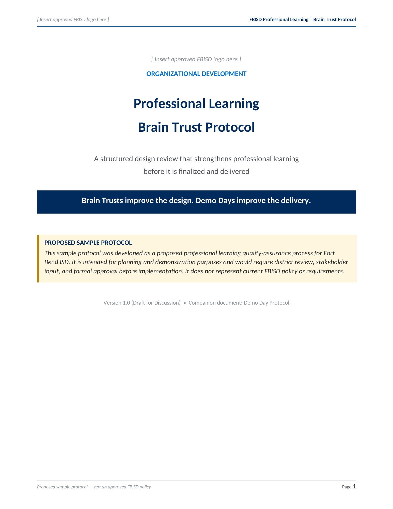

Fragmented
Campus-led learning varies widely.
Interview pre-work · Specialist, Professional Learning T2
A professional learning support plan for Fort Bend ISD - built to shift leaders from arranging sessions to designing, modeling, following through, and learning alongside teachers.
Evidence shapes the plan. Review and rehearsal protect quality. Leader follow-through supports transfer. The next plan begins with what the system learned.
01 · Read the signal
“Teachers just need fun sessions” is not a reason to work around leaders. It is evidence that the leadership practices surrounding professional learning are the thing to change.
Campus-led learning varies widely.
One-off workshops stand in for a system.
Teachers receive limited feedback and coaching.
The leadership practices around learning must change.
02 · Build the system
This plan does not add sessions. It changes how professional learning is designed, delivered, supported, and studied on every campus - and asks leaders to move through those structures first.
One evidence-based plan per campus, co-built with the principal and reviewed twice a year.
A Brain Trust strengthens the need, outcomes, adult-learning design, and follow-through while revision is still possible.
A Demo Day tests facilitation, pacing, directions, technology, and the real participant experience before launch.
Walkthroughs, written instructional feedback, and PLC follow-up turn a session into a supported practice.
Monthly development builds a facilitator and reviewer pool so campuses can run the process without OD in every room.
Twice-yearly reviews determine what should be repeated, revised, extended, or retired.
03 · Change the practice
The goal is not agreement with a new idea. The goal is a small set of leader behaviors that teachers can feel and evidence can reveal.
Schedule professional learning
Name the practice, the evidence, and the observable behavior change before choosing a topic or presenter.
Deliver a session and move on
Attach walkthroughs, feedback, PLC follow-up, and a responsible person to every substantial learning experience.
Give infrequent, evaluative feedback
Practice with video, peer review, and real feedback artifacts until the new behavior is routine.
Exempt leaders from the process
OD and principals go through design review and rehearsal as presenters before setting a campus-wide expectation.
THE ROLE CHANGEProfessional learning moves from something leaders arrange for teachers to something leaders participate in, design carefully, and follow through on.
04 · Make it real
Begin with evidence and volunteers. Build capacity before expanding. Use year-one evidence - not a fresh survey - to design year two.
Build the tools, co-design campus plans, and recruit 8-10 volunteer pilot campuses.
Every campus names one or two target practices and a follow-through cycle.
Train facilitators, launch the Campus Professional Learning Lead Network, and begin the leadership feedback sequence.
Pilot campuses complete two full design-and-rehearsal cycles.
Extend the expectations districtwide and embed review dates when sessions are scheduled.
All campuses use the process; walkthrough and feedback frequency are measured.
Review process, quality, and impact evidence; revise the tools; strengthen the facilitator pipeline.
Year two plans are built from year one results.
05 · Know what changed
Satisfaction tells us whether people enjoyed a session. It does not tell us whether practice changed.
Current campus plans, completed reviews, walkthrough and feedback frequency
Relevance, clarity, practice time, design consistency, facilitator readiness
Walkthrough evidence, teacher reports, movement on the campus improvement goal
06 · See the tools
Brain Trusts improve the design. Demo Days improve the delivery. Reviewing only one leaves half the quality question unexamined.

Design review
A structured, collaborative review while a professional learning session is still in draft. It protects quality at the moment the need, outcomes, practice, and follow-through are decided.
Proposed sample for discussion. This does not represent current FBISD policy or approved practice.
Delivery rehearsal
A rehearsal with an authentic audience after design revisions and before delivery. It moves the discovery of unclear directions, weak pacing, and technology failures into a room where they cost nothing.
Proposed sample for discussion. This does not represent current FBISD policy or approved practice.
The complete written response
Seven pages connecting the audit, six-component system, leader behavior change, implementation roadmap, measures, assumptions, and companion protocols.
The plan responds to the published role and the learning-system design task provided for the interview.
View job descriptionAbout Caitlin
Systems thinker · Facilitator · Learning designerI am an organizational learning leader who turns evidence into usable structures: facilitation protocols, leadership routines, coaching cycles, and measures that make transfer visible. My work is grounded in adult learning, psychological safety, and the belief that leaders should model the practices they ask of others.